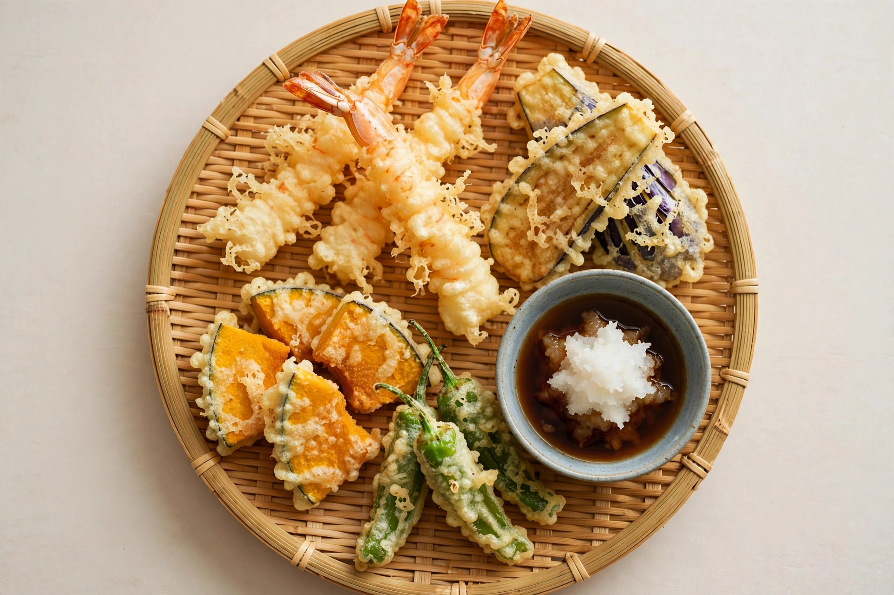

天ぷら
Tempura · tem-poo-rah
What is tempura?
Seafood and vegetables in an impossibly light, lacy batter — deep-fried so it shatters rather than crunches. Nothing like thick Western batter; good tempura barely feels fried at all.
What's inside
🦐 Shrimp, fish, veg
Raw / cooked
🔥 Fried
Spicy?
No
Typical price
¥1,000–3,000
How to eat it
- Dip lightly in tentsuyu （天つゆ) — a dashi-soy dipping sauce. Grated daikon is often floating in it; that's intentional.
- Eat each piece immediately — tempura waits for no one. Steam makes it soggy within minutes.
- A pinch of salt instead of sauce works beautifully on shrimp — many shops offer both.
Tendon vs tempura-mori
- 天丼 Tendon — tempura over rice in a bowl, drizzled with sweet sauce. Often ¥800–1,000. The budget king.
- 天ぷら盛り合わせ Tempura moriawase — assorted tempura on a plate with dipping sauce. More refined, pricier.
- 天ぷら定食 Teishoku — tempura set with rice, miso soup, pickles.
What you'll find inside
えび ebi (shrimp) is the star. Also common: きす kisu (whiting fish), なす nasu (eggplant), かぼちゃ kabocha (pumpkin), ししとう shishito (mild peppers), れんこん renkon (lotus root).
Common questions
Is tempura greasy?
Good tempura isn't. The batter is thin and the oil is very hot, so pieces come out crisp and light. If it's greasy, the oil wasn't hot enough.
What's the white stuff in the dipping sauce?
Grated daikon radish — it cuts the richness. Stir it in.